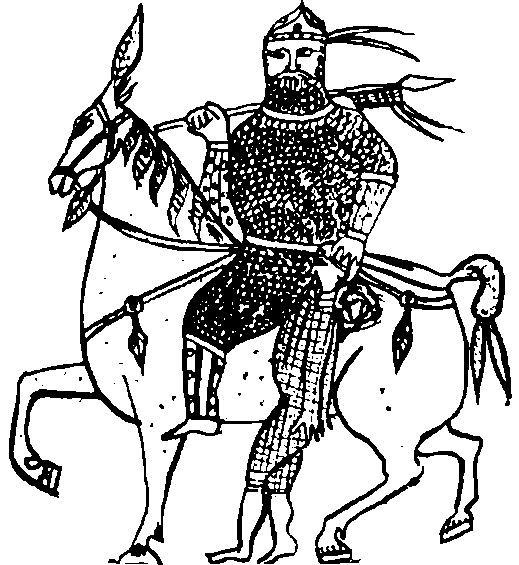

Dünden kalan yiyecekleri yediler. Ortalığa biraz çekidüzen verdiler. Tankut, balkondan iki eski sandalye bularak salona getirdi. Kahve almıştı ama ne cezve ne de ateş vardı. O keyiften mahrum kalarak, kuru kuruya sigarasını yaktı. Duvar sanki bir sinema perdesiymiş gibi yüzleri duvara dönük olarak, Çiçek’le yan yana oturdular. Tankut, Hayal Taşı’nı sol eline takıp, sola doğru çevirdi. Geçen seferlerden epey bir şey öğrenmişti. Hem Albız doğarken üşümesin hem de Çiçek korkmasın diye içeri koştu, dün gece büründüğü eski battaniyeyi kaptı geldi. Duvarın dibinde kıpırdanmaya başlayan, henüz bir böbrek büyüklügündeki karamsı vişneçürüğü maddenin üstüne örttü. Yerine geçti. Çiçek’in yanına olurdu.
Birkaç dakika sonra kendini can ü gönülden kutluyordu. İlk iki sefer duyduğu homurtu ve çığlıklar olmadan, küçük mutlu mırıltılar eşliğinde Albız ortaya çıktı. Battaniyenin altında başı biçimlendiği zaman yalnızca ayakları görünüyordu. Albız kalın parmaklı eliyle battaniyeyi aniden kendi üzerinden çekip aldığında, Tankut hafiften ürperdi. Çiçek ise hiç etkilenmişe benzemiyordu. Daha iki saat önce tuvalette ufacık bir fare gördüğü için Tankut’u yardıma çağıran o değildi sanki.
Albız, tüm korkunçluğu ve görkemiyle konuştu:
“Ooo Çiçek Hanım da hurdaymış! Hoş geldiniz, şöyle bir dünya gözüyle tanışalım, di mi efem? Selam Tankut? Argun Afaki üstadımız nerede? Hâlâ Hazaro-Selçuk tarihi mi çalışıyor bakalım!”
Tankut, “Hoş geldin Albız Dede!” diye mırıldandı. Albız sürdürdü:
“Çiçek’in kıymetini bil Tankut, pek akıllı, hünerli, ufku geniş bir kızımızdır? Size nasıl yardımcı olalım bugün Çiçek Hanım? Unutmayın, ürünlerimizi görebilir, tadabilir, elleyebilirsiniz artık.”
Tankut kıskançlıktan kudurdu. Albız’ın imalı konuştuğunu düşünmüş, beyninden vurulmuşa dönmüştü. Elinde olmayarak Albız’ın önüne baktı. Yoo, garibimin penisi spiral spiral olmuş, bu soğuk evde iyice küçülmüş, dikkat edilmezse görülmesi bile zorlaşmıştı. Rahatladı. Derin bir nefes aldı. Çiçek ağzını açtı. Albız dahil ikisini birden şaşırttı:
“Bu evde biraz sıcaklık ve ışık istiyorum, bir de üzerine oturulacak birkaç mobilya...”
Albız kızı kesti ve yarısı Türkçe, yarısı televizyon Türkçesi bir dille konuştu:
“Maddeyle ilgili her şeyi iste kızcağızım, sıvılar hariç, orası benim bölümüm değil!”
Sonra sağ pençesinin baş cırnağından büyücek, balon gibi, akkor halinde bir ışık kütlesi çıkardı. Sol elinde tuttuğu, nasıl ürettiğini görmedikleri, cama benzeyen ama cam olmasına teknik açıdan imkân olmayan saydam kristali, ışığın üstüne geçirdi. İşaret cırnağı ile tavanın sıvasında beş santim derinliğinde bir delik açtı. Ürettiği ışığı tavandaki bu deliğe yapıştırdı. Anlaşılan, ışığı oluşturan madde kristalden çıkamadığı için yukarı deliğe doğru akmış, ama orada katılaşarak kalmıştı. Ortalık birden nura boğuldu. Her taraf ışıl ışıl oldu.
Daha sonra, salonun koridora açılan kapısının karşısına gelen ikinci duvarının önüne sol elinin parmağından çıkardığı ışıksız, içinde sarısı kızılı olmayan, tamamen kara veya kahverengi, kil gibi esnekliği yüksek bir madde yığdı Albız. Klipasının bir iki yerden çatlaması pahasına eğilip kalkarak birkaç dakika içinde ikili, rahat görünüşlü bir koltuğu şekillendiriverdi. Tırnaklı pençesini koltuğun oturacak yeri ve arkalığı üzerinde birkaç kez, tırmık çeker gibi çekti. Maddeyi kabarttı. Köpüksü bir görünüş verdi. Uzun yoldan gelmiş yorgun konuklarını buyur eden bir büyükannenin şefkatli sesiyle İkiliyi çağırdı:
“Oturun çocuklarım!”
Her ikisi de yanacaktan veya içine çökecekleri korkusuyla çekine çekine oturdular. Tankut, kemiklerinin dinlendiğini hissetti. Koltuk hemen vücudunun şeklini almıştı, bir ergonometri mucizesiydi. Çiçek de pek mutlu duruyordu.
Tankut, neredeyse Albız’ın bedeni kadar büyük olan koltuktan dolayı Albız’da herhangi bir küçülme var mı diye baktı. Göremedi. İyice meraklandı. Bu İblis patatesi, Argun Abi’sinin bir iki kez böyle dediğini duymuştu Albız’a, neresinden bulup çıkarıyordu bu kadar şeyi? Dayanamadı sordu:
“Dede, nasıl oluyor da bunca şeyi yığdın önümüze, sende kalıp yine aynı, boy pos filan?”
“Yavrucum, istenirse değil benim bedenime, topluigne başına bile sıkıştırılır evrenlerin maddesi. Sonra istenirse yayılır, genişletilir. Bir şeycikler olmaz!”
Tankut, evrenin balon gibi genişlediği konusundaki teorileri bilmediği için, daralma konusundakileri de bilmezdi. “Ulan, Argun Abi gibi konuştu!” diye düşündü.
Sonra Albız, yalnızca hizmet için yaratılmış, hizmet etmekten mutlu bir kraliyet ailesi hizmetkârı edasıyla yine sordu:
“Rahat etmeniz için daha ne yapabilirim efendim?”
“Dedecim sigarayı yaktım, kahvem de var ama ne cezve var ne ateş, şöyle senin lirik anlatından önce...”
Albız, Tankut’u daha fazla konuşturmadı. Uyluklarından aldığı bir lav parçasını eğip bükerek anında bir cezve haline getirdi. Tankut koşarak pet şişelerden birini kaptı. Albız’a doğru yöneldi. Albız küçük bir çığlık attı. Suyun cezveye konulduğunu görünce sakinleşti. Suyu dökmemeye dikkat ederek cezveyi eline aldı. İki saniye sonra, buharlar çıkaran cezveyi geri verdi. Tankut, iki kâğıt bardağın içine kahve koymuş, bekliyordu. Teşekkür ederek kaynar suyu aldı. Albız, gülümseyerek sordu: “Daha evlat?”
Tankut, biraz utangaç,
“Ya Dede, benim alet biraz fişeksiz kaldı da” diye kekeledi. Albız içinden “Oo, fantezi saatinden önce hazırlık haa, seni seni...” diye kötü niyetle akıl yürütürken beriki devam etti:
“Dede, içinde tek kurşun vardı onu da bu sabah harcadım, öbürleri, biliyorsun...”
Albız, biraz utandı.
“Haa onlar mı? Şimdi üretmeye uğraşmayalım, eğer hazmetmediysem hazırda var birkaç tane” dedi. Silkindi, gövdesinden çıkan dokuz adet mermi tıkırtılar çıkararak parkenin üzerinde yuvarlandı. Çiçek dikkat etti, mermiler kor gibiydi, parkenin üzerinde kara yanık izleri bırakarak soğudular.
“Dedecim ya kapçıkları?”
“Dokuzluk muydular evlat?”
Silah üzerine bilgisini sergileyebildiği için mutluluktan havalara uçan Tankut, “Evet!” dedi.
Albız, dilinin üzerinden aldığı incecik, tabaka tabaka klipaları anında bükerek, fıstık gibi dokuz adet kovan durumuna getirdi. Tankut koşarak hepsini aldı. Bu sırada ilk ve son kez olmak üzere, kazara Albız’a dokundu. Ne sıcak ne soğuk, ne canlı ne cansız, ne ıslak ne kuru bir şeydi Albız’ın eli. İrkilerek, yarı sıcak kovanları bir elden diğerine aktararak, yerden mermileri topladı. Bunlara barut gerekti. Albız’ın önünde durdu, boynunu büktü. Albız, artık neresinden ürettiyse, avcunda tuttuğu kara bir tozu her birinin içine doldurdu. Çekirdekleri Tankut’un elinden alıp yerlerine oturttu. Baş ve işaret parmakları arasında yalnızca bir kez çevirerek sağlamlaştırdı. Tankut’a teslim etti. Tankut, eğer istemiş olsa, bir uçaksavar bataryası bile edineceğini biliyor olmanın mutluluğuyla, boş şarjörünü doldurdu. “Tanrım, burada tam dokuz adet kurşun var” diye şaşırdı. Kurşunlardan biri duvara saplanmıştı, biri Argun Abi’nin beynindeydi. Yedi tane kalması gerekmez miydi? Albız açıkladı:
“Evladım, takma kafana; duvarın Argun, Argun’un duvar, ikisinin birden Albız olduğu haller vardır. Hangisine sıkarsan sık kurşunu! Hepsi aynı kapıya çıkar.”
Çiçek asabi bir tavırla, adeta söylendi:
“Tankut Bey’in silahlanma yarışı ve Albız Bey’lerin felsefe salatası bittiyse ben şimdi de bir televizyon istiyorum!”
“Kızcağızım ne yapacan bitli bir televizyonu? Ben sana ne istersen gösteririm. Göstermekle kalmaz yaşatırım. Ben benim, ben Şeftan yavrucum! Basit bir dilden ibaret değilim şimdi. O duyduğun her şeyi görebilir, koklayabilir, istediklerine dokunabilirsin çocuğum!”
“Beni kandıramazsın Şeftan! Ben adam gibi, düzgün, en büyük boy bir plazma televizyon istiyorum, çabuk!”
Albız söylene söylene işe koyuldu. Tanm meslek’in makine ve elektronik bölümü mezunu Tankut meslek sırlarını görüp de öğrenmesin diye, koltukta oturan sevgililere sırtını döndü. Tankut, istemeden güldü. Albız’ın ufak, keçi kuyruğu gibi bir kuyruğu varmış meğer, ilk kez görüyordu. Albız, tam yarım saat uğraştı. Nihayet, sesinde iyi bir iş başarmış olmanın mutluluğuyla “Sürpriz! Beğeniniz, beğeniniz!” diyerek, koca gövdesini eserinin önünden çekti. Gerçekten de pırıl pınl, dev gibi, yassı, güzel bir televizyon müşterilerine gülümsüyordu. Patavatsız Tankut dayanamadı:
“Dede eline sağlık da, bu evde elektrik yok ki! Olsa niye ışık isteyelim?”
Albız, Türki dünyanın çeşitli dillerinde, araya İbranice de karıştırıp öyle küfürler etti, öyle uludu ki, apartman girişindeki tinerci çocuklar dışarı fırladılar, çil yavrusu gibi gecenin karanlığına dağıldılar. Dakikalarca evlerine dönemediler.
Tankut, yüzsüzlüğü ele aldı:
“Dede, yaptın bir iyilik bari tam olsun, bir akü yap da şunu seyredelim, senin de bunca emeğin boşa gitmemiş olur!”
Albız iyice meymenetsiz bir suratla yine sırtını döndü, bir yandan da düşünüyordu:
“Tamam, azapta olsak gerek ama bu kadarı da olmaz ki be birader, gidiyom, istifa ediyom lan, yukarda bir meteorun rotasını değiştirip Jüpiter’in aylarından birine çarptırmak daha kolay! Nihayetinde Tikkun’u önlemekle görevlendirilen bir ufak taşız, kitapsızlar! Gelin, maçanız sıkıyorsa siz yapın aküyü!”
Daha servisi yeni bitirmişken tekrar yukarı, beşinci kata İbrahim Beylere çağrılan bir kapıcının surat şirinliği, hızı ve hevesiyle çalıştı. Tam iki saat sonra aküyü üretti. Televizyona bağladı.
Çiçek, teşekkür bile etmeden televizyonu açtı. Bütün sevdiği kanalları sırasıyla dolaştı. Ne kadar teşhir yarışması varsa hepsine bakındı. Bir günde öyle büyük değişiklikler olmuyordu bunlarda.
“Aaa, 129 Ayhan’ın gözlüğü ne kadar kirli bugün! Saçları da yağ içinde. Ay, ayçiçeği yağı lobisi adına reklama mı çıktın? Pasaklı şey! Millet seni niye sevsin ayol bu pis halinle” gibi bir yorum yaptı isteksizce.
Üst üste hızlı bir şekilde okununca kulağa “iyi kanal, iyi kanal” gibi gelen ve Argun Afaki’ye ait olan Kanal İ’de yeni bir yarışma programı başlamıştı sadece. Birtakım koca koca adamlar, yerlere eğilmiş görünmeyen birtakım yarışçıları “Hadi Karaoğlan, Ye onu Fahriye Abla, Sen onu geçersin Sharon, Yapma be Terminatör!” gibi ifadelerle teşvik ediyorlar, koca bir stüdyo ahalisi de ayakta alkış tutuyordu. Albız iyice şaşkın mırıldandı,
“Bizlerden biri diyor ki, önleme lan şunların Tikkun’unu, Altın Çağları mıdır nedir yaşasınlar bakalım, beğenecekler mi?”
Haber kanallarına bakmak için sabırsızlanan Tankut da şaşkındı.
“Ne yarıştırıyorlar Çiçek?”
“Ne’blim ben ayol, yeni başlamış bu yarışma. İlk kez görüyorum.”
“E, niye seyrediyoruz o zaman?”
“Ne yarıştırdıklarını öğrenmek için!”
Buna da denecek bir şey olamayacağından, kaderine razı oldu, boynunu büktü Tankut. Anında bir erkek dayanışmasına giren Albız, ona o kadar acıdı ki, on beş dakika içinde yalnız ve yalnız haber kanallarını gösteren bir başka televizyon üretip aküye bağladı. Haber kanallarından en muteber birini bulup Tankut’a haber verdi.
Tankut, sevinçle kendi televizyonuna baktı. Düş kırıklığı! Orada da beş altı kerli ferli ve birbirine “hocam, hocam” diyen adam futbol konuşuyorlardı. Biraz bekledi, yok. En ufak bir kıpırdanma yoktu. Hatta bir ara hiçbirinin söyleyecek hiçbir sözü kalmadığı için, yarım dakikalık bir sessizlik bile oldu. “İşte böyle hocam” dercesine, karşılıklı olarak kaşlarını oynatıp durdular. İki tanesi Afaki’ye ait olan öbür kanallara baktı. Birinde yine başka bir ekiple futbol konuşuluyor, diğerindeyse doğrudan futbolcular konuşuyordu. Uzun bir dolaşmadan sonra Çiçek’in çığlık çığlığa “Iıy, Allah belanızı versin!” dediğini duydular. Tankut ve Albız, ikisi birden onun televizyonunun ekranına baktılar. Kanal İ stüdyosundaki dev ekranı yakın plan gösteriyordu kameralar. Çok bacaklı, dev gibi bir canlı sırtüstü yere düşmüş, debeleniyordu. Albız “Lan bizden biri olmasın bu?” diye düşündü. Bazen görev gereği böcek kılığına girdikleri oluyordu. İri, kallavi bir şey. Sunucu heyecan içinde aynı sözleri tekrarlayıp duruyordu:
“Müessif bir olay efendim! Maalesef oluyor bu tip kazalar, 388 Erman, 98 Hayri’nin yarışçısının üzerine bastı. Başı kısmen ezilen yarışmacıya artık kimse yardım edemez gibi duruyor!”
Adamların eğitilmiş hamamböceği yarıştırdıklarını öğrenince Çiçek aniden kanal değiştirmişti. İlginç bir şekilde ekranda Argun Afaki’nin resmini yakaladığı için durdu. Sonunda bir moda kanalında haberi yakalamışlardı. Kısacıktı. Dün akşam ofisinde ölü bulunan Unomastik Holding yönetim kurulu başkanının Teşvikiye Camii’ndeki cenaze töreni: Enseleri uzun saçlı, lacivert takım elbiseli birtakım adamlar cenaze namazı kılıyorlardı. Tankut, ne kadar gayret ederse etsin Unomasıik’ten kimseyi göremedi. Ölümün şekli ve Tankut üzerine hiçbir şey yoktu. Haa, bir de holdingin başına Tavramina Afaki geçmişmiş.